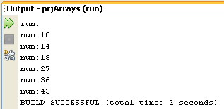
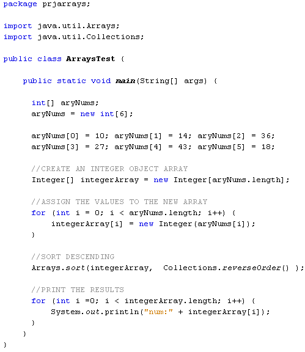

Learn Java- Complete Offline Beginners Guide
Other inbuilt java methods allow you to sort your arrays. To use the sort method of arrays, you first need to reference a Java library called Arrays. You do this with the import statement. Try it with your aryNums programme. Add the following import statement:
import java.util.Arrays;
You code should look like ours below:

Now that you have imported the Arrays library, you can use the sort method. It's quite easy:
Arrays.sort( aryNums );
First you type the word "Arrays", then a dot. As soon as you type a dot, NetBeans will display a list of things you can do with arrays. Type the word "sort". In between a pair of round brackets, you then put the name of the array you want to sort. (Notice that you don't need any square brackets after the array name.)
And that's it - that's enough to sort the array! Here's some code to try out:
The for loop at the end will go round and round printing out the values in each array position. When the code is run, the Output will look like this:

As you can see, the array has been sorted in ascending order.
Sorting in descending order, however, is only possible either by writing your
own sorting code, or converting your array to Integer objects then importing
from the Collections library. If you need to a descending sort, here's some
code that does just that (skip this code, if you want):

All a bit messy, I'm sure you'll agree!
In the next lesson, we'll take a look at arrays and strings.